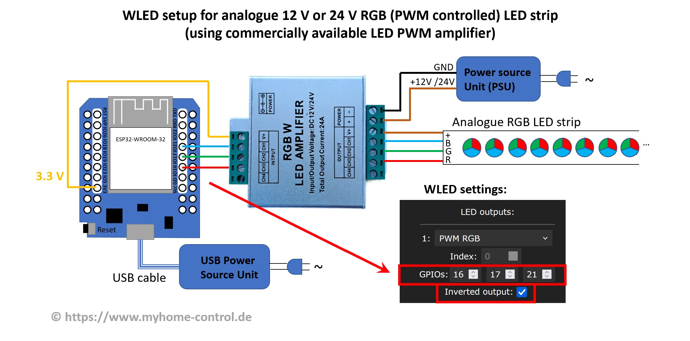
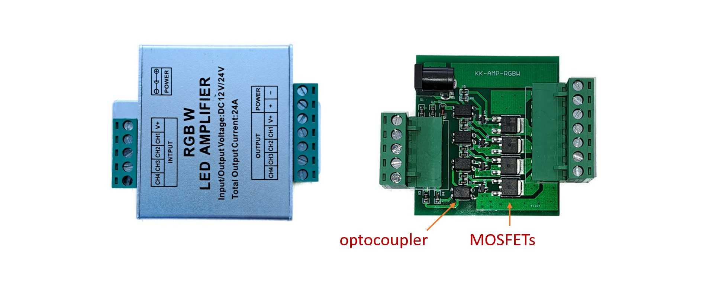
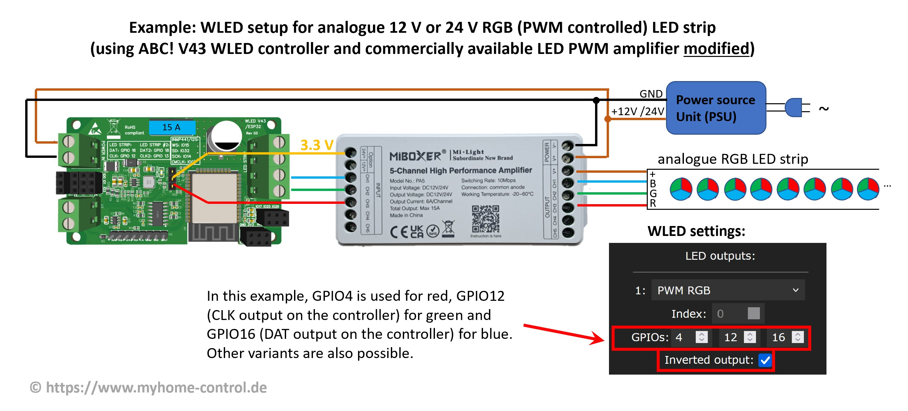
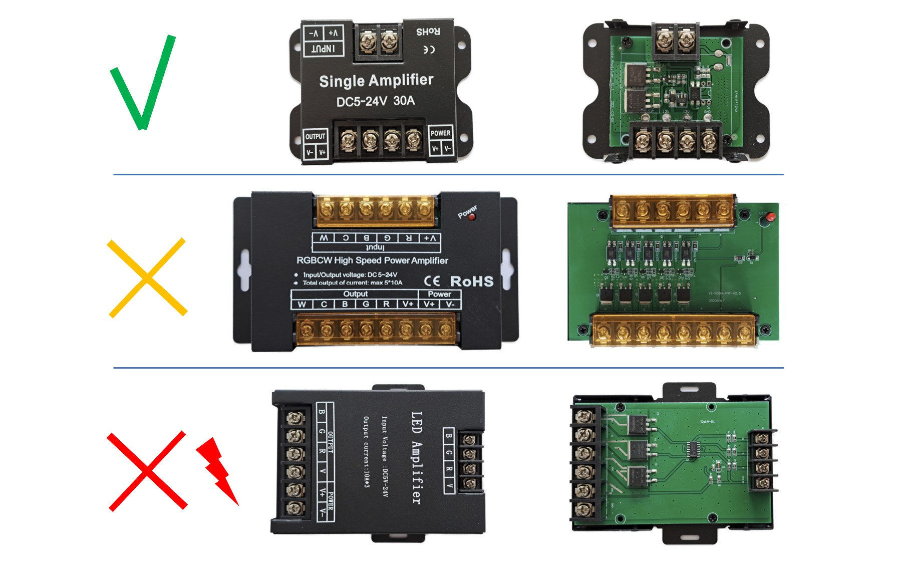

Analog LED strips not only need a microcontroller for control, but also some additional components such as MOSFETs.
A basic circuit diagram is shown here. You need one MOSFET and one GPIO per color. It should be noted that the MOSFETs are destroyed very quickly in the event of an overload. To reduce the risk of fire and prevent personal injury, additional circuit elements should be implemented to protect MOSFETs from overtemperature and overload. Depending on the type, fuses are too slow for this! You might consider using self-protected MOSFETs too or the entire MOSFET circuit can be packed into a fire-retardant (e.g. metallic) housing. There is also a ready-made PWM board, which also implements several coordinated protection mechanisms.
Some so-called RGB(W) LED amplifiers (also called repeaters/boosters) can also be used. Types that contain optocouplers are suitable. These also have a MOSFET circuit (1 to 5 channels) and can be used, for example, as follows (note: as of 2025: there are now many variants without optocouplers in the same housing. These cannot be distinguished from the outside and are therefore unsuitable. Using them will most likely result in the controller failing!):

Note that there is no GND connection between the controller and the amplifier. And this despite the fact that with all other WLED circuits it is always said that all GNDs must be connected to each other. This special feature is due to the fact that the inputs of the amplifier are galvanically decoupled from the outputs by optocouplers and the amplifier in this circuit is used slightly differently than its usual application.
You can connect the GPIOs directly (3.3V signal level) to the inputs of the amplifier or, if you use a ready-made WLED controller, you can also use the data outputs (of the level shifter, i.e. 5 V signal level). You can also use both at the same time:
The amplifier shown in the picture is a cheap product. Its advantage is a metal case. However, its circuit is very simple:

The simple structure means that the duty cycle of the PWM signal (the ratio between pulse and period duration) at the output is slightly distorted compared to the input. In many cases this is not critical, but it does result in the color composition of an RGB strip being slightly distorted. A significantly better (and slightly more expensive) version is described in this article (in German). Here the MOSFETs are controlled with push-pull drivers. This and some other measures in the circuit mean that the PWM signal is reproduced very accurately at the output.
Always check beforehand that your amplifier is optocoupler-based! Different versions can be sold in the same housing.
There are also other variants on the market (e.g. MiBoxer RGBW 5-channel amplifier and similar ones) that enable more precise PWM reproduction, but require modification as shown in this picture:
With this modification, this amplifier can be used, for example, as follows:

The disadvantage of this type, however, is that it has a plastic housing. We have not investigated whether this plastic housing has a fire-retardant effect. Special safety precautions may therefore be necessary.
Three other types are shown below:

The first type works quite well, the second only with modification of the resistors. The third type must under no circumstances be used for the application discussed here, as it has no galvanic isolation through optocouplers and an attempt to use it would lead to the destruction of the WLED controller.